2019年北京市中考数学试题 原卷解析
2019年北京市中考数学试卷
一.选择题（本题共16分，每小题2分）第1-8题均有四个选项，符合题意的选项只有一个．
1．4月24日是中国航天日，1970年的这一天，我国自行设计、制造的第一颗人造地球卫星“东方红一号”成功发射，标志着中国从此进入了太空时代，它的运行轨道，距地球最近点439 000米．将439 000用科学记数法表示应为（）
A.0.439×106 B.4.39×106C.4.39×105D.139×103
【解析】本题考察科学记数法较大数， 中要求
中要求 ，此题中
，此题中 ，故选C
，故选C
2．下列倡导节约的图案中，是轴对称图形的是（）


A. B. C. D.
【解析】本题考察轴对称图形的概念，故选C
3．正十边形的外角和为（）
A.180°B.360°C.720°D.1440°
【解析】多边形的外角和是一个定值360°，故选B
4．在数轴上，点A，B在原点O的两侧，分别表示数a，2，将点A向右平移1个单位长度，得到点C．若CO=BO，则a的值为（）
A.-3B.-2C.-1D.1
【解析】本题考察数轴上的点的平移及绝对值的几何意义.点A表示数为a，点B表示数为2，点C表示数为a+1，由题意可知，a＜0，∵CO=BO，∴ ，解得
，解得 （舍）或
（舍）或 ，故选A
，故选A
5．已知锐角∠AOB 如图，（1）在射线OA上取一点C，以点O为圆心，OC长为半径作
如图，（1）在射线OA上取一点C，以点O为圆心，OC长为半径作 ，交射线OB于点D，连接CD；
，交射线OB于点D，连接CD；
（2）分别以点C，D为圆心，CD长为半径作弧，交于点M，N；
（3）连接OM，MN．
根据以上作图过程及所作图形，下列结论中错误的是（）
A.∠COM=∠CODB.若OM=MN，则∠AOB=20°
C.MN∥CDD.MN=3CD
【解析】连接ON，由作图可知△COM≌△DON.
A. 由△COM≌△DON.，可得∠COM=∠COD，故A正确.
B. 若OM=MN，则△OMN为等边三角形，由全等可知∠COM=∠COD=∠DON=20°，故B正确
C.由题意，OC=OD，∴∠OCD= .设OC与OD与MN分别交于R，S，易证△MOR≌△NOS，则OR=OS，∴∠ORS=，∴∠OCD=∠ORS.∴MN∥CD，故C正确.
.设OC与OD与MN分别交于R，S，易证△MOR≌△NOS，则OR=OS，∴∠ORS=，∴∠OCD=∠ORS.∴MN∥CD，故C正确.
D.由题意，易证MC=CD=DN，∴MC+CD+DN=3CD.∵两点之间线段最短.∴MN＜MC+CD+DN=3CD，故选D
6．如果 ，那么代数式
，那么代数式 的值为（）A.-3B.-1C.1D.3
的值为（）A.-3B.-1C.1D.3
【解析】：


∴原式=3，故选D
7．用三个不等式 ，
， ，
， 中的两个不等式作为题设，余下的一个不等式作为结论组成一个命题，组成真命题的个数为（）
中的两个不等式作为题设，余下的一个不等式作为结论组成一个命题，组成真命题的个数为（）
A.0B.1C.2D.3
【解析】本题共有3种命题：
命题①，如果 ，那么
，那么 .
.
∵ ，∴
，∴ ，∵
，∵ ，∴
，∴ ，整理得
，整理得 ，∴该命题是真命题.
，∴该命题是真命题.
命题②，如果 那么.
那么.
∵ ∴
∴ ∵，∴
∵，∴ ，∴.
，∴.
∴该命题为真命题.
命题③，如果 ，那么.
，那么.
∵∴∵，∴，∴
∴该命题为真命题.
故，选D
8． 某校共有200名学生，为了解本学期学生参加公益劳动的情况，收集了他们参加公益劳动时间（单位：小时）等数据，以下是根据数据绘制的统计图表的一部分．
学生 类型 人数 时间 | 
| 
| 
| 
| 
|
学生类别 性别 | 男 | 7 | 31 | 25 | 30 | 4 |
女 | 8 | 29 | 26 | 32 | 8 |
学段 | 初中 | | 25 | 36 | 44 | 11 |
高中 | | | | | |

下面有四个推断：
①这200名学生参加公益劳动时间的平均数一定在24.5-25.5之间
②这200名学生参加公益劳动时间的中位数在20-30之间
③这200名学生中的初中生参加公益劳动时间的中位数一定在20-30之间
④这200名学生中的高中生参加公益劳动时间的中位数可能在20-30之间
所有合理推断的序号是（）
A.①③B.②④C.①②③D.①②③④
【解析】①由条形统计图可得男生人均参加公益劳动时间为24.5h，女生为25.5h，则平均数一定在24.5~25.5之间，故①正确
②由统计表类别栏计算可得，各时间段人数分别为15,60,51,62,12，则中位数在20~30之间，故②正确.
③由统计表计算可得，初中学段栏0≤t＜10的人数在0~15之间，当人数为0时，中位数在20~30之间；当人数为15时，中位数在20~30之间，故③正确.
④由统计表计算可得，高中学段栏各时间段人数分别为0~15，35,15，18,1.当
0≤t＜10时间段人数为0时，中位数在10~20之间；当0≤t＜10时间段人数为15时，中位数在10~20之间，故④错误
故，选C
二、填空题（本题共16分，每小题2分）
9．若分式
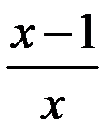
的值为0，则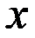
的值为 .
.【解析】本题考查分式值为0，则分子
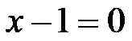
，且分母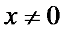
，故答案为110．如图，已知△ABC，通过测量、计算得△ABC的面积约为cm2.（结果保留一位小数）
【解析】本题考查三角形面积，直接动手操作测量即可，故答案为“测量可知”
11．在如图所示的几何体中，其三视图中有矩形的是
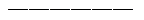
.（写出所有正确答案的序号）【解析】本题考查对三视图的认识.①长方体的主视图，俯视图，左视图均为矩形；②圆柱的主视图，左视图均为矩形，俯视图为圆；③圆锥的主视图和左视图为三角形，俯视图为圆.故答案为①②
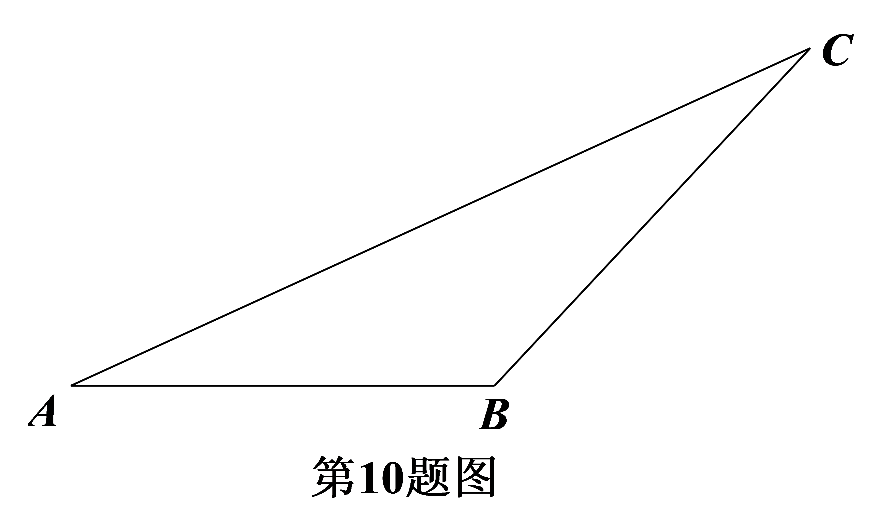
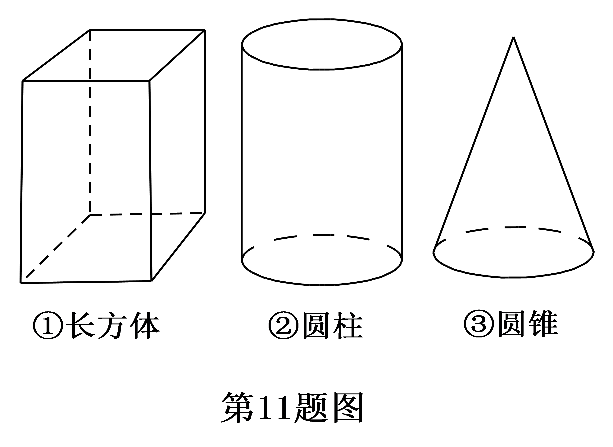
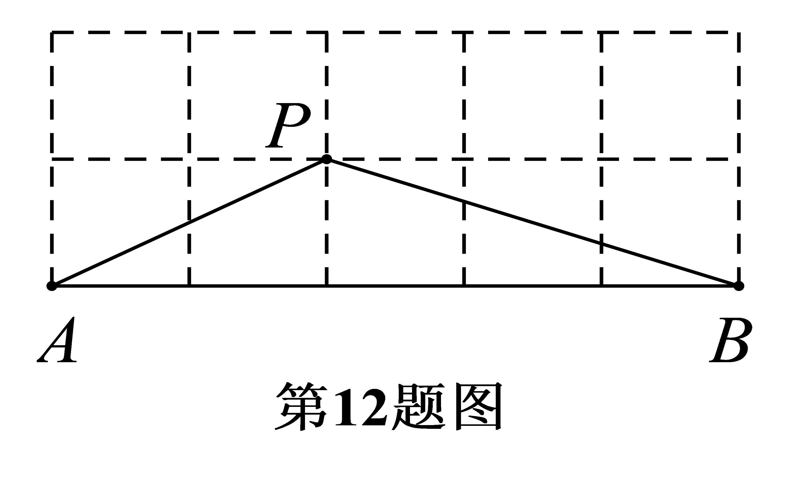
12．如图所示的网格是正方形网格，则＝
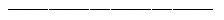
°（点A，B，P是网格线交点）.【解析】本题考查三角形的外角，可延长AP交正方形网格于点Q，连接BQ，如图所示，经计算
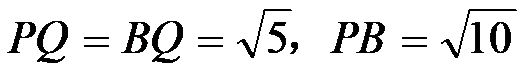
，∴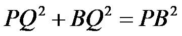
，即△PBQ为等腰直角三角形，∴∠BPQ=45°，∵∠PAB+∠PBA=∠BPQ=45°，故答案为45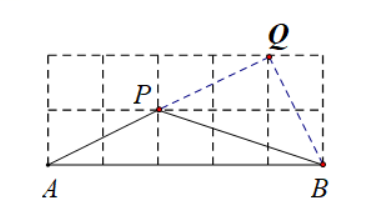
13．在平面直角坐标系
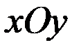
中，点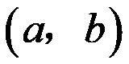
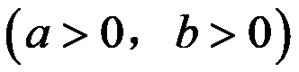
在双曲线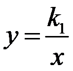
上．点关于轴的对称点在双曲线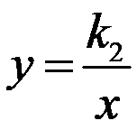
上，则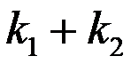
的值为.【解析】本题考查反比例函数的性质，A（a，b）在反比例上，则
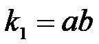
，A关于 轴的对称点B的坐标为
轴的对称点B的坐标为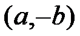
，又因为B在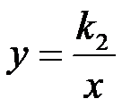
上，则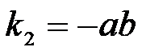
，∴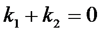
故答案为0
14．把图1中的菱形沿对角线分成四个全等的直角三角形，将这四个直角三角形分别拼成如图2，图3所示的正方形，则图1中菱形的面积为．
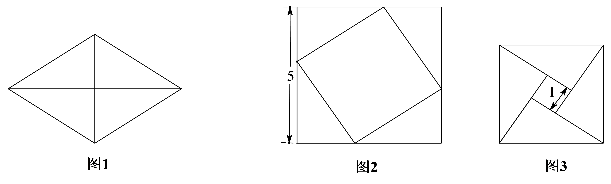
【解析】设图1中小直角三角形的两直角边分别为a，b（b＞a），则由图2，图3可列方程组
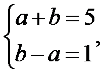
解得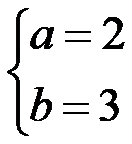
，所以菱形的面积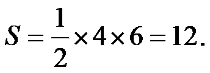
故答案为12.15．小天想要计算一组数据92，90，94，86，99，85的方差
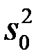
．在计算平均数的过程中，将这组数据中的每一个数都减去90，得到一组新数据2，0，4，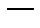
4，9，5．记这组新数据的方差为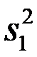
，则. (填“”，“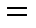
”或“”)【解析】本题考查方差的性质。两组数据的平均值分别为91和1，
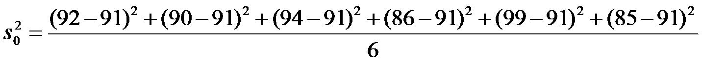
=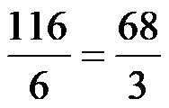
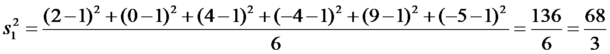
∴
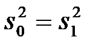
，故答案为=16．在矩形ABCD中，M，N，P，Q分别为边AB，BC，CD，DA上的点（不与端点重合）．
对于任意矩形ABCD，下面四个结论中，
①存在无数个四边形MNPQ是平行四边形；
②存在无数个四边形MNPQ是矩形；
③存在无数个四边形MNPQ是菱形；
④至少存在一个四边形MNPQ是正方形．
所有正确结论的序号是．
【解析】根据平行四边形的判定，矩形的判定，以及正方形的判定可知，存在无数个平行四边形，无数个矩形，无数个正方形，故答案为①②③
三、解答题（本题共68分，第17-21题，每小题5分，第22-24题，每小题6分，第25题5分，第26题6分，第27-28题，每小题7分）
解答应写出文字说明、演算步骤或证明过程．
17．计算：
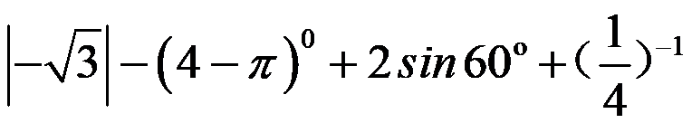
.【解析】原式=
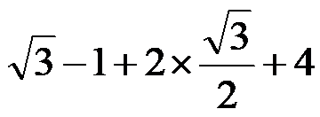
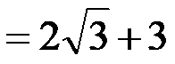
18．解不等式组：
【解析】解不等式①得：
 ，∴
，∴
解不等式②得： ，∴
，∴
∴不等式组的解集为
19．关于x的方程 有实数根，且m为正整数，求m的值及此时方程的根．
有实数根，且m为正整数，求m的值及此时方程的根．
【解析】∵ 有实数根，∴△≥0，即
有实数根，∴△≥0，即 ，∴
，∴
∵m为正整数，∴ ，故此时二次方程为
，故此时二次方程为 即
即
∴
∴，此时方程的根为
 20．如图，在菱形ABCD中，AC为对角线，点E，F分别在AB，AD上，BE=DF，连接EF．
20．如图，在菱形ABCD中，AC为对角线，点E，F分别在AB，AD上，BE=DF，连接EF．
（1）求证：AC⊥EF；
（2）延长EF交CD的延长线于点G，连接BD交AC于点O，若BD=4，tanG= ，求AO的长．
，求AO的长．
【解析】证明：∵四边形ABCD为菱形∴AB=AD，AC平分∠BAD
∵BE=DF，∴ ，∴AE=AF
，∴AE=AF
∴△AEF是等腰三角形，∵AC平分∠BAD，∴AC⊥EF
（2）解：∵四边形ABCD为菱形，∴CG∥AB，BO= BD=2，∵EF∥BD
BD=2，∵EF∥BD
∴四边形EBDG为平行四边形，∴∠G=∠ABD，∴tan∠ABD=tan∠G=
∴tan∠ABD= ，∴AO=1
，∴AO=1
21．国家创新指数是反映一个国家科学技术和创新竞争力的综合指数．对国家创新指数得分排名前40的国家的有关数据进行收集、整理、描述和分析．下面给出了部分信息：
a．国家创新指数得分的频数分布直方图（数据分成7组：
30≤x＜40，40≤x＜50，50≤x＜60，60≤x＜70，70≤x＜80，80≤x＜90，90≤x≤100）；

b．国家创新指数得分在60≤x＜70这一组的是：
61.7 62.4 63.6 65.9 66.4 68.5 69.1 69.3 69.5
c．40个国家的人均国内生产总值和国家创新指数得分情况统计图：

d．中国的国家创新指数得分为69.5.
（以上数据来源于《国家创新指数报告（2018）》）
根据以上信息，回答下列问题：
（1）中国的国家创新指数得分排名世界第；
（2）在40个国家的人均国内生产总值和国家创新指数得分情况统计图中，包括中国在内的少数几个国家所对应的点位于虚线 的上方．请在图中用“
的上方．请在图中用“ ”圈出代表中国的点；
”圈出代表中国的点；
（3）在国家创新指数得分比中国高的国家中，人均国内生产总值的最小值约为万美元；（结果保留一位小数）
（4）下列推断合理的是．
①相比于点A，B所代表的国家，中国的国家创新指数得分还有一定差距，中国提出“加快建设创新型国家”的战略任务，进一步提高国家综合创新能力；
②相比于点B，C所代表的国家，中国的人均国内生产总值还有一定差距，中国提出“决胜全面建成小康社会”的奋斗目标，进一步提高人均国内生产总值．
【解析】
（1）17
（2）

（3）2.7（4）①②
22．在平面内，给定不在同一直线上的点A，B，C，如图所示．点O到点A，B，C的距离均等于a（a为常数），到点O的距离等于a的所有点组成图形G， 的平分线交图形G于点D，连接AD，CD．
的平分线交图形G于点D，连接AD，CD．
（1）求证：AD=CD；
（2）过点D作DE BA，垂足为E，作DFBC，垂足为F，延长DF交图形G于点M，连接CM．若AD=CM，求直线DE与图形G的公共点个数．
BA，垂足为E，作DFBC，垂足为F，延长DF交图形G于点M，连接CM．若AD=CM，求直线DE与图形G的公共点个数．

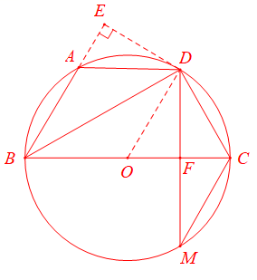
【解析】如图所示，依题意画出图形G为⊙O，如图所示
（1）证明：∵BD平分∠ABC，∴∠ABD=∠CBD，
∴ ，∴AD=CD
，∴AD=CD
（2） 解：∵AD=CD，AD=CM，∴CD=CM.∵DF⊥BC，∴∠DFC=∠CFM=90°
在Rt△CDF和Rt△CMF中
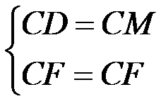
，∴△CDF≌△CMF（HL），∴DF=MF，∴BC为弦DM的垂直平分线∴BC为⊙O的直径，连接OD
∵∠COD=2∠CBD，∠ABC=2∠CBD，∴∠ABC=∠COD，∴OD∥BE.
又∵DE⊥BA，∴∠DEB=90°，∴∠ODE=90°，即OD⊥DE，∴DE为⊙O的切线.
∴直线DE与图形G的公共点个数为1个.
23．小云想用7天的时间背诵若干首诗词，背诵计划如下：
①将诗词分成4组，第i组有 首，i =1，2，3，4；
首，i =1，2，3，4；
②对于第i组诗词，第i天背诵第一遍，第（ ）天背诵第二遍，第（
）天背诵第二遍，第（ ）天背诵第三遍，三遍后完成背诵，其它天无需背诵，
）天背诵第三遍，三遍后完成背诵，其它天无需背诵， 1，2，3，4；
1，2，3，4；
| 第1天 | 第2天 | 第3天 | 第4天 | 第5天 | 第6天 | 第7天 |
第1组 | 
|
| |
| | | |
第2组 | | 
|
| |
| | |
第3组 | | | | | | | |
第4组 | | | | 
|
| |
|
③每天最多背诵14首，最少背诵4首．
解答下列问题：
（1）填入 补全上表；
补全上表；
（2）若 ，
， ，
， ，则的所有可能取值为
，则的所有可能取值为 ；
；
（3）7天后，小云背诵的诗词最多为首．
【解析】（1）如下图
| 第1天 | 第2天 | 第3天 | 第4天 | 第5天 | 第6天 | 第7天 |
第1组 | | | | | | | |
第2组 | | | | | | | |
第3组 | | | 
|
| |
| |
第4组 | | | | | | | 
|
（2）根据上表可列不等式组：
 ，可得
，可得
（3）确定第4天， ，由第2天，第3天，第5天可得
，由第2天，第3天，第5天可得
 ，∴
，∴ ，∴
，∴ ，
，
可取 最大整数值为9，∴
最大整数值为9，∴
24．如图，P是与弦AB所围成的图形的外部的一定点，C是上一动点，连接PC交弦AB于点D．

小腾根据学习函数的经验，对线段PC，PD，AD的长度之间的关系进行了探究．
下面是小腾的探究过程，请补充完整：
（1）对于点C在上的不同位置，画图、测量，得到了线段PC，PD，AD的长度的几组值，如下表：
| 位置1 | 位置2 | 位置3 | 位置4 | 位置5 | 位置6 | 位置7 | 位置8 |
PC/cm | 3.44 | 3.30 | 3.07 | 2.70 | 2.25 | 2.25 | 2.64 | 2.83 |
PD/cm | 3.44 | 2.69 | 2.00 | 1.36 | 0.96 | 1.13 | 2.00 | 2.83 |
AD/cm | 0.00 | 0.78 | 1.54 | 2.30 | 3.01 | 4.00 | 5.11 | 6.00 |
在PC，PD，AD的长度这三个量中，确定的长度是自变量，的长度和的长度都是这个自变量的函数；
（2）在同一平面直角坐标系 中，画出（1）中所确定的函数的图象；
中，画出（1）中所确定的函数的图象；

（3）结合函数图象，解决问题：当PC=2PD时，AD的长度约为cm．
【解析】
（1）AD， PC，PD；
（2）
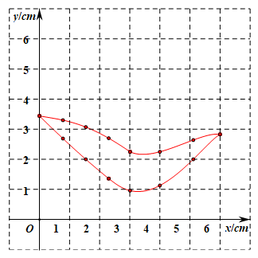
（3）2.29或者3.98
25. 在平面直角坐标系中，直线l： 与直线
与直线 ，直线
，直线
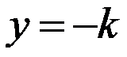
分别交于点A，B，直线与直线交于点 ．
．（1）求直线 与
与 轴的交点坐标；
轴的交点坐标；
（2）横、纵坐标都是整数的点叫做整点．记线段围成的区域（不含边界）为 ．
．
①当 时，结合函数图象，求区域内的整点个数；
时，结合函数图象，求区域内的整点个数；
②若区域内没有整点，直接写出 的取值范围．
的取值范围．
【解析】（1）令 ，则
，则 ，∴直线与
，∴直线与
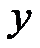
轴交点坐标为（0,1）（2）①当
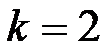
时，直线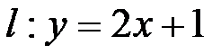
，把 代入直线，则
代入直线，则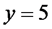
，∴A（2,5）把
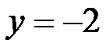
代入直线得：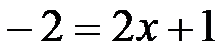
，∴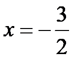
∴
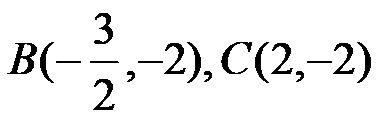
，整点有（0，-1），（0,0），（1，-1），（1,0），（1,1），（1,2）共6个点.②-1≤k＜0或k=-2
26．在平面直角坐标系中，抛物线与 轴交于点A，将点A向右平移2个单位长度，得到点B，点B在抛物线上．
轴交于点A，将点A向右平移2个单位长度，得到点B，点B在抛物线上．
（1）求点B的坐标（用含 的式子表示）；
的式子表示）；
（2）求抛物线的对称轴；
（3）已知点，．若抛物线与线段PQ恰有一个公共点，结合函数图象，求的取值范围．
【解析】（1）∵抛物线与轴交于点A，∴令，得，
∴点A的坐标为，∵点A向右平移两个单位长度，得到点B，
∴点B的坐标为；
（2）∵抛物线过点和点，由对称性可得，抛物线对称轴为
直线，故对称轴为直线
（3）①当 时，则，分析图象可得：根据抛物线的对称性，抛物线不可能同时经过点A和点P；也不可能同时经过点B和点Q，所以，此时线段PQ与抛物线没有交点.
时，则，分析图象可得：根据抛物线的对称性，抛物线不可能同时经过点A和点P；也不可能同时经过点B和点Q，所以，此时线段PQ与抛物线没有交点.
②当 时，则.
时，则.
分析图象可得：根据抛物线的对称性，抛物线不可能同时经过点A和点P；但当点Q在点B上方或与点B重合时，抛物线与线段PQ恰有一个公共点，此时即
综上所述，当时，抛物线与线段PQ恰有一个公共点.
27．已知 ，H为射线OA上一定点，
，H为射线OA上一定点， ，P为射线OB上一点，M为线段OH上一动点，连接PM，满足
，P为射线OB上一点，M为线段OH上一动点，连接PM，满足 为钝角，以点P为中心，将线段PM顺时针旋转
为钝角，以点P为中心，将线段PM顺时针旋转 ，得到线段PN，连接ON．
，得到线段PN，连接ON．
（1）依题意补全图1；
（2）求证： ；
；
（3）点M关于点H的对称点为Q，连接QP．写出一个OP的值，使得对于任意的点M总有ON=QP，并证明．

【解析】
（1）如图所示

（2）在△OPM中，∠OMP=180°-∠POM-∠OPM=150°-∠OPM
∠OPN=∠MPN-∠OPM=150°-∠OPM
∴∠OMP=∠OPN

（3）过点P作PK⊥OA，过点N作NF⊥OB.
∵∠OMP=∠OPN，∴∠PMK=∠NPF
在△NPF和△PMK中
 ，∴△NPF≌△PMK（AAS）
，∴△NPF≌△PMK（AAS）
∴PF=MK，∠PNF=∠MPK，NF=PK.
又∵ON=PQ，在Rt△NOF和Rt△PKQ中
 ，∴Rt△NOF≌Rt△PKQ（HL），∴KQ=OF.
，∴Rt△NOF≌Rt△PKQ（HL），∴KQ=OF.
设MK=y，PK=x
∵∠POA=30°，PK⊥OQ
∴OP=2x，∴OK= ，
，
∴ ，
，


∵M与Q关于H对称，∴MH=HQ
∴KQ=KH+HQ=
∵KQ=OF，∴ ，整理得
，整理得
所以，即PK=1
∵∠POA=30°，∴OP=2
28．在△ABC中， ，
， 分别是
分别是 两边的中点，如果
两边的中点，如果 上的所有点都在△ABC的内部或边上，则称为△ABC的中内弧．例如，下图中是△ABC的一条中内弧．
上的所有点都在△ABC的内部或边上，则称为△ABC的中内弧．例如，下图中是△ABC的一条中内弧．

（1）如图，在Rt△ABC中， 分别是
分别是 的中点．画出△ABC的最长的中内弧，并直接写出此时的长；
的中点．画出△ABC的最长的中内弧，并直接写出此时的长；

（2）在平面直角坐标系中，已知点 ，在△ABC中，
，在△ABC中， 分别是的中点．
分别是的中点．
①若 ，求△ABC的中内弧所在圆的圆心
，求△ABC的中内弧所在圆的圆心 的纵坐标的取值范围；
的纵坐标的取值范围；
②若在△ABC中存在一条中内弧，使得所在圆的圆心在△ABC的内部或边上，直接写出t的取值范围．
【解析】
（1）


（2）

①当 时，C（2,0），D（0,1），E（1,1）
时，C（2,0），D（0,1），E（1,1）
（i）当P为DE的中点时， 是中内弧，∴
是中内弧，∴
（ii）当⊙P与AC相切时， ，当
，当 时，
时， ，∴
，∴
综上，P的纵坐标 或
或
②（i）当PE⊥AC时，△EFC∽△PFE，得 ∴
∴ ∴
∴
∴

（ii）△PFC∽△ABC，得
DP=PF=r， ，∴
，∴ ，∴
，∴
综上：